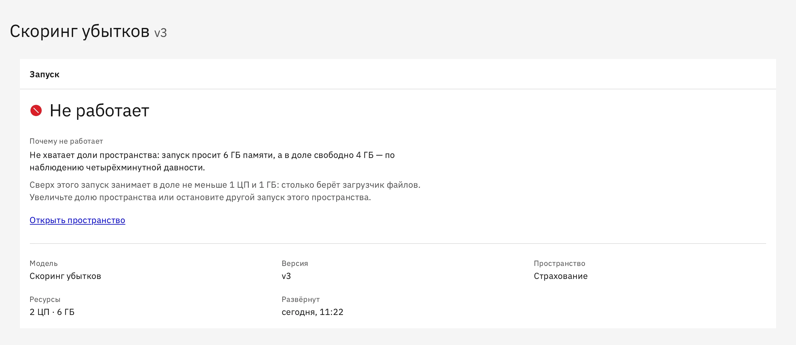

Страхование
Разбор документов по убытку и медкарт ДМС
Заявления, справки и медкарты читают вручную, дело ждёт днями.
Генеративные
Время обработки одного дела
Атриум запускает предиктивные и генеративные модели на внутренних серверах.
Компания сама выбирает модели и сама управляет доступом к ним.

Схема
Остаются на внутренних серверах. Файлы моделей лежат в хранилище компании, интернет не нужен.
Открытая или собственная, предиктивная или генеративная. Генеративные модели отвечают по адресу в формате OpenAI, поэтому программа, которая работала с внешним сервисом, переходит на внутреннюю модель сменой адреса и токена.
Вход есть в поставке Атриума, к нему подключается каталог пользователей компании, AD или LDAP. У каждой команды своё пространство, права задаёт администратор. Доступом к каждой модели управляет компания: кому можно обращаться, как часто, с запросами какого размера и из каких сетей.
Помогает разобраться, если что-то пошло не так: какая операция, когда, с какой версией модели и чем закончилась.
Компания запускает открытые и собственные модели и меняет их, когда выходит лучше. Серверы и видеокарты она тоже выбирает сама.
Сейчас каждая команда сама поднимает модель на сервере и сама решает, кто к ней обращается. В Атриуме все модели компании запускаются одинаково, с общими правами и общим журналом.
Пространства команд, права и журнал уже собраны. Новые версии и исправления ошибок выпускает команда Атриума, обновления входят в лицензию.
Пилот доходит до работы. Модели запускаются на внутренних серверах по одному порядку для всех команд. ИТ не настраивает сервер под каждый проект и видит все модели компании в одном списке. У каждой команды своя квота ресурсов.
ПодробнееДоступом управляет компания. Модели и данные остаются на внутренних серверах. Компания решает, кто входит, какие у кого права, какие программы обращаются к модели и откуда. Журнал помогает разобрать инцидент: какая операция, когда, с какой версией модели и чем закончилась.
ПодробнееМодель доходит до работы без очереди в ИТ. Команда сама добавляет модель из браузера, запускает её и получает адрес для программ компании. Прежние версии модели сохраняются, любую можно развернуть снова.
ПодробнееСервер, на котором модели работают с первого дня. Атриум ставится на сервер до поставки. Заказчик сам выбирает модели: открытые и собственные, предиктивные и генеративные.
ПодробнееГотовая основа для проектов в контуре заказчика. Права, журнал и доступ к моделям уже собраны, их не нужно делать заново в каждом проекте. Установка, программы под задачу и первая линия поддержки остаются за интегратором.
ПодробнееЗадачи, где данные не должны уходить из компании. У каждой есть показатель, по которому виден результат.
Все сценарииСтрахование
Заявления, справки и медкарты читают вручную, дело ждёт днями.
Генеративные
Время обработки одного дела
Банки
Новая модель скоринга месяцами ждёт выхода в работу.
Предиктивные
Срок вывода модели, доля одобрений, просрочка
Промышленность
Ремонт начинается после остановки линии.
Предиктивные
Внеплановые простои в месяц, часы простоя
Любая отрасль
Сотрудники отправляют рабочие документы во внешние чат-боты.
Генеративные
Доля запросов во внешние сервисы
Четыре шага в браузере, без ручной настройки серверов.

Подробности и сроки по каждому пункту на странице для ИТ.
Для ИТ и безопасностиИнтегратор ставит Атриум на серверы компании, подключает к нему программы и ведёт поддержку. Удобно, если с интегратором уже работают.
Ставит команда Атриума вместе с ИТ компании. Лицензия годовая.
Атриум можно купить вместе с сервером. Производитель ставит его до поставки, и сервер с программой приходят одним комплектом.
С одной задачи и одной команды.
Описать задачу в двух строках: какие данные, какая модель и где она должна работать.
По видеосвязи, на стенде Атриума и на примере задачи компании.
Атриум ставится на серверы компании для одной команды и одной модели. Результат проверяют по показателю задачи, срок и условия обсуждают после показа.
Годовая лицензия. К Атриуму подключаются остальные команды и программы.
Нет. Атриум и модели работают на внутренних серверах без выхода в интернет, данные и запросы остаются в компании. На закрытые серверы Атриум ставится в один шаг.
Для пробного запуска ориентир такой: три машины по 8 ядер и 32 ГБ памяти. Генеративным моделям нужны видеокарты. Всё остальное для работы ставится вместе с Атриумом.
Предиктивные и генеративные, открытые и собственные. Форматы: scikit-learn, XGBoost, LightGBM, ONNX, PyTorch и TensorFlow.
Да. Генеративные модели в Атриуме отвечают по адресу в формате OpenAI, программа переходит на внутреннюю модель сменой адреса и токена. Подсказки для модели иногда приходится подправить под новую модель.
Для готовых открытых моделей не нужна: модель запускается из браузера, а программы компании к ней подключает ИТ или интегратор. Собственные модели готовит команда компании или подрядчик.
Качество зависит от самой модели, и проверяют его на задаче компании. Атриум ответы не оценивает, но хранит версии: если новая отвечает хуже, можно вернуться к прежней.
Пока нет. Включение в реестр российского ПО и работа на российских ОС запланированы на I квартал 2027 года.
Атриум продаётся по годовой лицензии. Цена зависит от числа пользователей и видеокарт, а начать можно с пробного запуска на задаче компании. Обновления и поддержка по почте входят в лицензию.